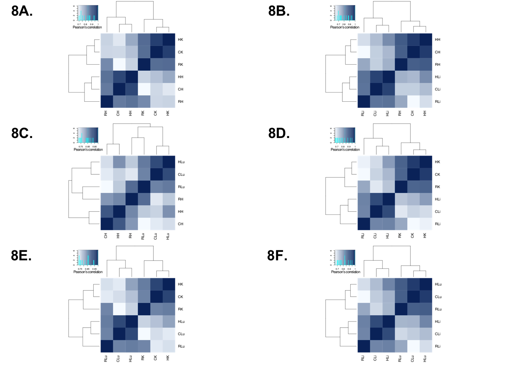
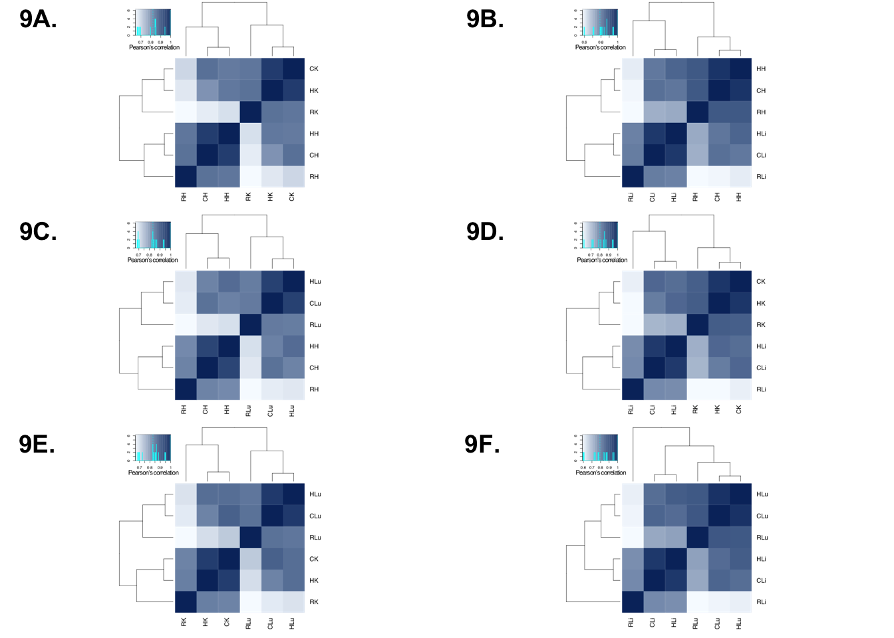

library(cowplot)## Warning: package 'cowplot' was built under R version 3.4.4## Loading required package: ggplot2##
## Attaching package: 'cowplot'## The following object is masked from 'package:ggplot2':
##
## ggsavelibrary("ggplot2")
library("gplots")## Warning: package 'gplots' was built under R version 3.4.4##
## Attaching package: 'gplots'## The following object is masked from 'package:stats':
##
## lowessp1 <- ggdraw()+draw_image("/Users/laurenblake/Desktop/tissue_paper/heart_kidney_humans.pdf")
p2 <- ggdraw()+draw_image("/Users/laurenblake/Desktop/tissue_paper/heart_liver_humans.pdf")
p3 <- ggdraw()+draw_image("/Users/laurenblake/Desktop/tissue_paper/heart_lung_humans.pdf")
p4 <- ggdraw()+draw_image("/Users/laurenblake/Desktop/tissue_paper/liver_kidney_humans.pdf")
p5 <- ggdraw()+draw_image("/Users/laurenblake/Desktop/tissue_paper/lung_kidney_humans.pdf")
p6 <- ggdraw()+draw_image("/Users/laurenblake/Desktop/tissue_paper/liver_lung_humans.pdf")
make_fig1 <- plot_grid(p1, p2, p3, p4, p5, p6, labels = c("7A.", "7B.", "7C.", "7D.", "7E.", "7F."), ncol = 2)
make_fig1save_plot("/Users/laurenblake/Desktop/tissue_paper/test4.pdf", make_fig1,
ncol = 2, # we're saving a grid plot of 2 columns
nrow = 3, base_height = 3.5, base_width = 3.5, # and 2 rows
# each individual subplot should have an aspect ratio of 1.3
base_aspect_ratio = 1
)p1 <- ggdraw()+draw_image("/Users/laurenblake/Desktop/tissue_paper/heart_kidney_chimps.pdf")
p2 <- ggdraw()+draw_image("/Users/laurenblake/Desktop/tissue_paper/heart_liver_chimps.pdf")
p3 <- ggdraw()+draw_image("/Users/laurenblake/Desktop/tissue_paper/heart_lung_chimps.pdf")
p4 <- ggdraw()+draw_image("/Users/laurenblake/Desktop/tissue_paper/liver_kidney_chimps.pdf")
p5 <- ggdraw()+draw_image("/Users/laurenblake/Desktop/tissue_paper/lung_kidney_chimps.pdf")
p6 <- ggdraw()+draw_image("/Users/laurenblake/Desktop/tissue_paper/liver_lung_chimps.pdf")
make_fig1 <- plot_grid(p1, p2, p3, p4, p5, p6, labels = c("8A.", "8B.", "8C.", "8D.", "8E.", "8F."), ncol = 2)
make_fig1
save_plot("/Users/laurenblake/Desktop/tissue_paper/test5.pdf", make_fig1,
ncol = 2, # we're saving a grid plot of 2 columns
nrow = 3, base_height = 3.5, base_width = 3.5, # and 2 rows
# each individual subplot should have an aspect ratio of 1.3
base_aspect_ratio = 1
)p1 <- ggdraw()+draw_image("/Users/laurenblake/Desktop/tissue_paper/heart_kidney_rhesus.pdf")
p2 <- ggdraw()+draw_image("/Users/laurenblake/Desktop/tissue_paper/heart_liver_rhesus.pdf")
p3 <- ggdraw()+draw_image("/Users/laurenblake/Desktop/tissue_paper/heart_lung_rhesus_median.pdf")
p4 <- ggdraw()+draw_image("/Users/laurenblake/Desktop/tissue_paper/liver_kidney_rhesus.pdf")
p5 <- ggdraw()+draw_image("/Users/laurenblake/Desktop/tissue_paper/lung_kidney_rhesus.pdf")
p6 <- ggdraw()+draw_image("/Users/laurenblake/Desktop/tissue_paper/liver_lung_rhesus.pdf")
make_fig1 <- plot_grid(p1, p2, p3, p4, p5, p6, labels = c("9A.", "9B.", "9C.", "9D.", "9E.", "9F."), ncol = 2)
make_fig1
save_plot("/Users/laurenblake/Desktop/tissue_paper/test6.pdf", make_fig1,
ncol = 2, # we're saving a grid plot of 2 columns
nrow = 3, base_height = 3.5, base_width = 3.5, # and 2 rows
# each individual subplot should have an aspect ratio of 1.3
base_aspect_ratio = 1
)